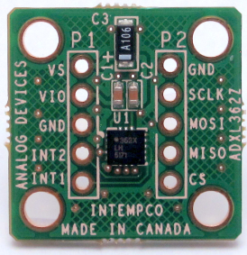

ADXL362 Input 3-Axis Digital Accelerometer Linux Driver#
Supported Devices#
Reference Circuits#
Evaluation Boards#
ADXL362: Micropower 3-Axis MEMS Accelerometer: Digital Output, ±2/±4/±8 g Range#
Source Code#
Status#
| Source | Mainlined? |
|---|---|
| git | In Progress |
Files#
| Function | File |
|---|---|
| driver | drivers/input/misc/adxl362.c |
| include | include/linux/input/adxl362.h |
Example platform device initialization#
For compile time configuration, it’s common Linux practice to keep board- and application-specific configuration out of the main driver file, instead putting it into the board support file.
Digital Accelerometer characteristics are application specific and may vary between boards and models. The platform_data for the device’s “struct device” holds this information.
enum adxl_odr {
ADXL_ODR_12_5HZ = 13,
ADXL_ODR_25HZ = 25,
ADXL_ODR_50HZ = 50,
ADXL_ODR_100HZ = 100,
ADXL_ODR_200HZ = 200,
ADXL_ODR_400HZ = 400,
};
enum adxl_g_range {
ADXL_RANGE_PM_2g = 2,
ADXL_RANGE_PM_4g = 4,
ADXL_RANGE_PM_8g = 8,
};
enum adxl_power_mode {
ADXL_NORM_OPERATION = 0,
ADXL_LOW_NOISE_MODE = 1,
ADXL_ULTRA_LOW_NOISE_MODE = 2,
};
struct adxl362_platform_data {
/*
* data_range:
* Measurement range selection +/- 2,4,8 g
*/
enum adxl_g_range data_range;
/*
* low_power_mode:
* Power versus noise tradeoff.
*/
enum adxl_power_mode low_power_mode;
/*
* data_rate:
* Selects the output data rate (ODR).
*/
enum adxl_odr data_rate;
/*
* half_bw:
* Sets the anti-aliasing filter to 1/4 of the output data rate (ODR)
*/
bool half_bw;
/*
* watermark_odr:
* The Watermark feature can be used to reduce the interrupt/poll load
* of the system. The FIFO fills up to watermark value in sample sets
* [1..170] and then generates an interrupt. Each ODR can have it's
* own watermark.
*/
u8 watermark_odr_12Hz;
u8 watermark_odr_25Hz;
u8 watermark_odr_50Hz;
u8 watermark_odr_100Hz;
u8 watermark_odr_200Hz;
u8 watermark_odr_400Hz;
/*
* When acceleration measurements are received from the ADXL362
* events are sent to the input event subsystem. The following settings
* select the event code for ABS x, y and z axis data
* respectively. The event codes can also be negated to further account
* for sensor orientation.
*/
s32 ev_code_x; /* (+/-)ABS_X,Y,Z */
s32 ev_code_y; /* (+/-)ABS_X,Y,Z */
s32 ev_code_z; /* (+/-)ABS_X,Y,Z */
s32 abs_fuzz; /* input fuzz val */
/*
* [in]activity_threshold:
* holds the threshold value for activity detection.
* The data format is unsigned. The scale factor is
* 1mg/LSB.
*/
u16 activity_threshold;
u16 inactivity_threshold;
/*
* [in]activity_time:
* is an unsigned time value representing the
* amount of time that acceleration must be [below]/above the value in
* [in]activity_threshold for [in]activity to be declared.
* The scale factor is 1ms/LSB.
*/
u32 inactivity_time;
u32 activity_time;
/*
* referenced_[in]activity_en:
* Sets [in]activity detection to operate in referenced mode opposed to
* absolute mode.
*/
bool referenced_activity_en;
bool referenced_inactivity_en;
/*
* Use ADXL362 INT2 pin instead of INT1 pin for interrupt output
*/
bool use_int2;
/*
* Optional IRQ flags
*/
unsigned irqflags;
};
static struct adxl362_platform_data adxl362_info = {
.data_rate = ADXL_ODR_100HZ, /* 100Hz */
.data_range = ADXL_RANGE_PM_2g, /* +/- 2000mg */
.activity_threshold = 70, /* 70mg (referenced) */
.inactivity_threshold = 30, /* 30mg (referenced) */
.inactivity_time = 10000, /* 10s */
.activity_time = 1, /* 1ms */
.referenced_activity_en = true, /* cancel static accel. of gravity */
.referenced_inactivity_en = true, /* cancel static accel. of gravity */
.watermark_odr_12Hz = 1,
.watermark_odr_25Hz = 1,
.watermark_odr_50Hz = 1,
.watermark_odr_100Hz = 1,
.watermark_odr_200Hz = 2, /* limit irq/poll interval to 10ms */
.watermark_odr_400Hz = 4, /* limit irq/poll interval to 10ms */
.ev_code_x = ABS_X, /* default mapping */
.ev_code_y = ABS_Y,
.ev_code_z = ABS_Z,
};
Declaring SPI slave devices#
Unlike PCI or USB devices, SPI devices are not enumerated at the hardware level. Instead, the software must know which devices are connected on each SPI bus segment, and what slave selects these devices are using. For this reason, the kernel code must instantiate SPI devices explicitly. The most common method is to declare the SPI devices by bus number.
This method is appropriate when the SPI bus is a system bus, as in many embedded systems, wherein each SPI bus has a number which is known in advance. It is thus possible to pre-declare the SPI devices that inhabit this bus. This is done with an array of struct spi_board_info, which is registered by calling spi_register_board_info().
For more information see: Documentation/spi/spi-summary.rst
Depending on the DDS IC used, you may need to set the modalias accordingly, matching your part name. It may also required to adjust max_speed_hz. Please consult the datasheet, for maximum spi clock supported by the device in question.
static struct spi_board_info board_spi_board_info[] __initdata = {
## if defined(CONFIG_INPUT_ADXL362) || defined(CONFIG_INPUT_ADXL362_MODULE)
{
.modalias = "adxl362",
.platform_data = &adxl362_info,
.irq = IRQ_PF6,
.max_speed_hz = 5000000, /* max spi clock (SCK) speed in HZ */
.bus_num = 0,
.chip_select = 1,
.mode = SPI_MODE_0,
},
## endif
};
static int __init board_init(void)
{
[--snip--]
spi_register_board_info(board_spi_board_info, ARRAY_SIZE(board_spi_board_info));
[--snip--]
return 0;
}
arch_initcall(board_init);
Adding Linux driver support#
Configure kernel with “make menuconfig” (alternatively use “make xconfig” or “make qconfig”)
Note
The ADXL34x Driver depends on CONFIG_SPI
Input device support
-*- Generic input layer (needed for keyboard, mouse, ...)
< > Support for memoryless force-feedback devices
< > Polled input device skeleton
< > Sparse keymap support library
* Userland interfaces *
< > Mouse interface
< > Joystick interface
<*> Event interface
< > Event debugging
* Input Device Drivers *
[ ] Keyboards --->
[ ] Mice --->
[ ] Joysticks/Gamepads --->
[ ] Tablets --->
[ ] Touchscreens --->
[*] Miscellaneous devices --->
--- Miscellaneous devices
< > Analog Devices AD714x Capacitance Touch Sensor
< > BMA150/SMB380 acceleration sensor support
< > MMA8450 - Freescale's 3-Axis, 8/12-bit Digital Accelerometer
< > MPU3050 Triaxial gyroscope sensor
< > Sharp GP2AP002A00F I2C Proximity/Opto sensor driver
< > Polled GPIO tilt switch
< > Kionix KXTJ9 tri-axis digital accelerometer
< > User level driver support
< > PCF8574 Keypad input device
< > Rotary encoders connected to GPIO pins
< > Analog Devices ADXL34x Three-Axis Digital Accelerometer
**<*> Analog Devices ADXL362 Three-Axis Digital Accelerometer**
< > VTI CMA3000 Tri-axis accelerometer
Hardware I/O ports --->
Hardware configuration#
{kind=link}
Driver testing#
Driver compiled as a module#
root:~> **modprobe evdev**
root:~> **modprobe adxl362**
input: ADXL362 accelerometer as /devices/platform/bfin-spi.0/spi_master/spi0/spi0.1/input/input0
Driver compiled into the kernel#
Your kernel startup messages should include something like this
input: ADXL362 accelerometer as /devices/platform/bfin-spi.0/spi_master/spi0/spi0.1/input/input0
Common Problems#
In case you see a message like this
adxl362 spi0.1: Failed to probe (0x00:0x00)
This means that the SPI communication and initilaization with the ADXL362 failed. check bus_num and chip_select in your platform device file
Checking for proper installation#
After the kernel boot your device folder should include at least one device node for the accelerometer
Use the event_test utility to test proper function#
root:/> event_test /dev/input/event0
Input driver version is 1.0.1
Input device ID: bus 0x1c vendor 0xad product 0xf2 version 0x1
Input device name: "ADXL362 accelerometer"
Supported events:
Event type 0 (Sync)
Event type 3 (Absolute)
Event code 0 (X)
Value -144
Min -2000
Max 2000
Event code 1 (Y)
Value -256
Min -2000
Max 2000
Event code 2 (Z)
Value 398
Min -2000
Max 2000
Testing ... (interrupt to exit)
Event: time 43.641571, -------------- Report Sync ------------
Event: time 43.641582, type 3 (Absolute), code 0 (X), value 192
Event: time 43.641588, type 3 (Absolute), code 1 (Y), value 7
Event: time 43.641593, type 3 (Absolute), code 2 (Z), value 291
Event: time 43.641597, -------------- Report Sync ------------
Event: time 43.656442, type 3 (Absolute), code 0 (X), value 211
Event: time 43.656451, type 3 (Absolute), code 1 (Y), value 12
Event: time 43.656456, type 3 (Absolute), code 2 (Z), value 295
Event: time 43.656461, -------------- Report Sync ------------
Event: time 43.656476, type 3 (Absolute), code 1 (Y), value 15
Event: time 43.656481, type 3 (Absolute), code 2 (Z), value 280
Event: time 43.656486, -------------- Report Sync ------------
Note
In case you move the accelerometer and don’t receive events, it’s likely that something with your Interrupt is wrong. check irq number in your platform device file
Note
In case you get a message like: evtest: No such device, it’s likely that you have not install the necessary modules
ADXL34x Sysfs runtime controls#
root:/> cd sys/class/input/input0/device/
root:/sys/devices/platform/bfin-spi.0/spi_master/spi0/spi0.1> **ls -al**
drwxr-xr-x 4 root root 0 Jan 1 01:40 .
drwxr-xr-x 4 root root 0 Jan 1 01:40 ..
-rw-rw-r-- 1 root root 4096 Jan 1 01:50 autosleep
lrwxrwxrwx 1 root root 0 Jan 1 01:50 driver -> ../../../../../../bus/spi/drivers/adxl362
drwxr-xr-x 3 root root 0 Jan 1 01:40 input
-r--r--r-- 1 root root 4096 Jan 1 01:50 modalias
drwxr-xr-x 2 root root 0 Jan 1 01:50 power
-rw-rw-r-- 1 root root 4096 Jan 1 01:50 rate
lrwxrwxrwx 1 root root 0 Jan 1 01:50 subsystem -> ../../../../../../bus/spi
-rw-r--r-- 1 root root 4096 Jan 1 01:50 uevent
Controlling the Output Data Rate#
| Output Data Rate (Hz) | Bandwidth (Hz) |
|---|---|
| 400 | 200 |
| 200 | 100 |
| 100 | 50 |
| 50 | 25 |
| 25 | 12.5 |
| 12.5 | 6.25 |
Writing ‘Output Data Rate’ into rate sets the desired sample rate Reading rate returns the current Output Data Rate See table above for supported sample rates
root:/sys/devices/platform/bfin-spi.0/spi_master/spi0/spi0.1> echo 400 > rate
root:/sys/devices/platform/bfin-spi.0/spi_master/spi0/spi0.1> cat rate
400
Enabling / Disabling Autosleep Upon Inactivity#
Writing ‘1’ into autosleep - enables Autosleep Upon Inactivity Writing ‘0’ into autosleep - disables Autosleep Upon Inactivity
More Information#
Linux-Input mailing list: linux-input@vger.kernel.org
Need Help?
ADXL362/6 Android Acceleration Sensor#
Using this driver under Android as Acceleration Sensor Follow the link here ADXL362 Android Sensor